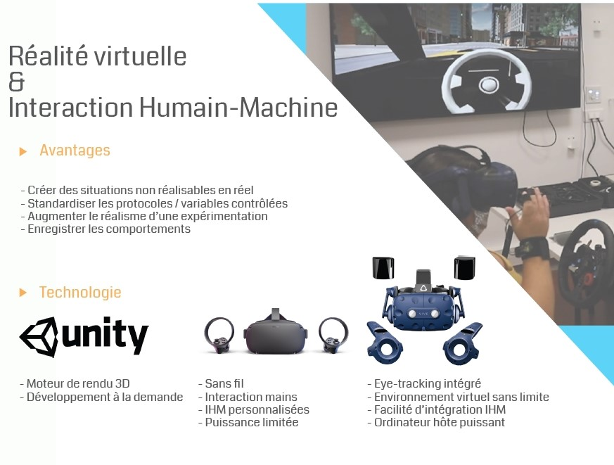
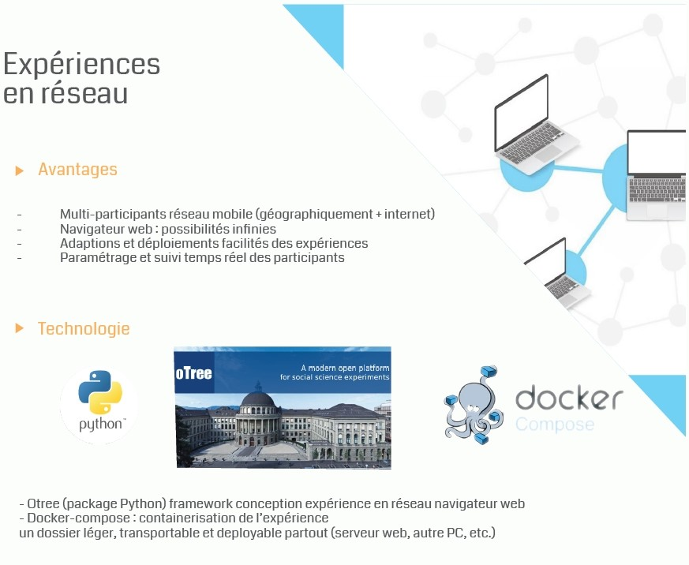
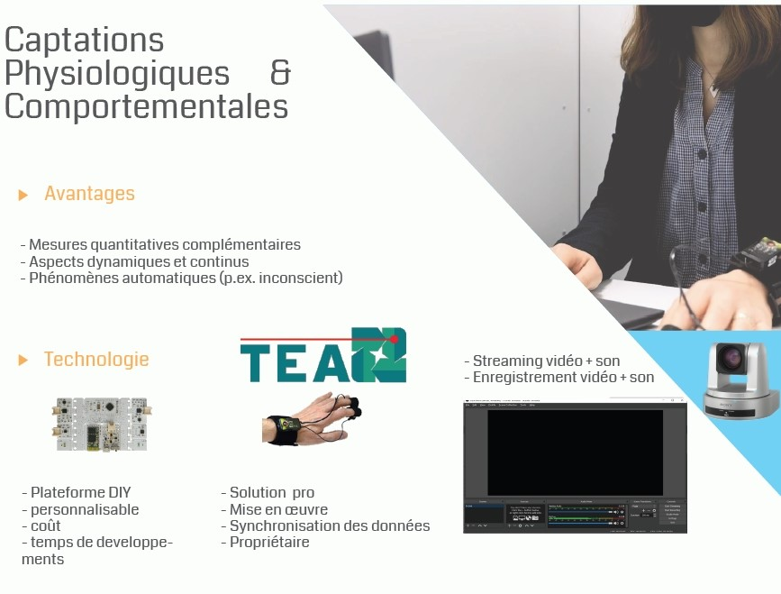
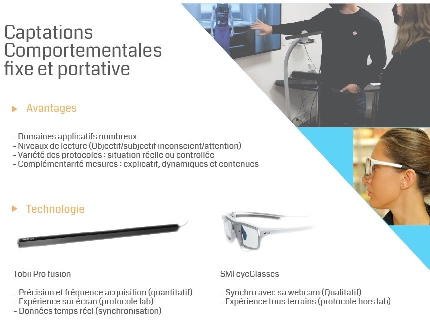
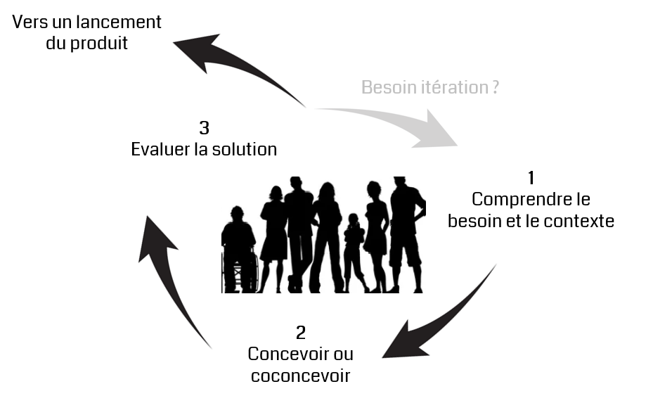
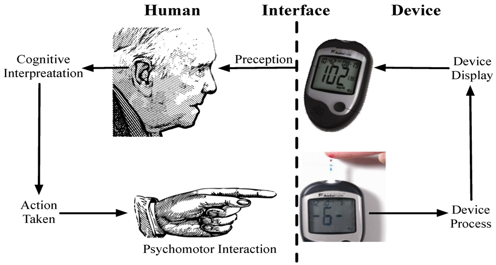

Spécialisée en Sciences Humaines et Sociales (psychologie, marketing, économie, etc.)
Spécialisée en Sciences Humaines et Sociales (psychologie, marketing, économie, etc.)
Compétences et outils (informatiques, électroniques et numériques) pour l'analyse des comportements humains
Conçoit des environnements (réels, virtuels et mixtes) contrôlés et des outils informatiques
Mesure la réaction des utilisateurs (comportementale, physiologique, cognitive, etc.)
Concevoir
 
Mesurer
 
Conception Centrée Utilisateur(client)
Interaction entre l’humain et un produit/service avec un regard pluridisciplinaire
alliant informatique, le numérique, traitement du signal, l'ergonomie cognitive, la psychologie sociale, etc.

Exemple
Conception d'un outil pour mesurer la glycémie chez un public de personnes agées

Comprendre la cible --> besoins, limites, etc. de ce type de population
Developper ou co-developper un prototype --> un objet connecté ? une interface numérique, une application de RV ? (couts itération, adaptation aux personnes, etc.)
Tester la version avec des utilisateurs et évaluer (sous différents angles - psycho, cognitif, utilisabilité, bioméca...)
Quelques projets P2AC
Mesurer pour concevoir
Utiliser la réponse d'un humain pour developper / améliorer un produit, service, etc.
Concevoir pour mesurer
Utiliser la technologie pour comprendre l'humain dans sa grande diversité et dans un contexte donné.
Collaborations (179€) & prestations (240€)
Conseil --> à tout instant de la boucle de conception centrée utilisateur.
Formation --> RV, capteurs, logiciels, statistique, démarche recherche.
Developpement / Conception --> numérique, informatique, electronique.
Experimentation --> location matériel de mesure, aide à l'expérimentation et au traitement et à l'analyse des résultats.